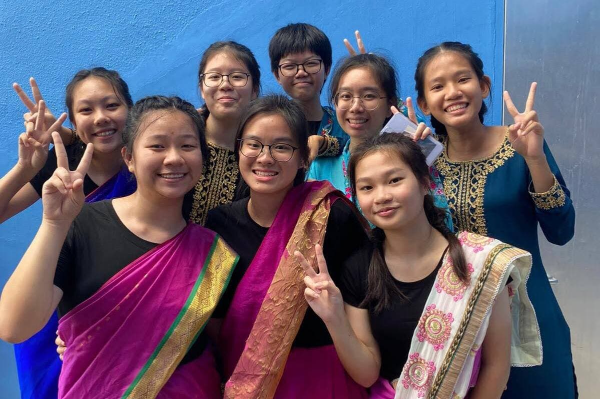
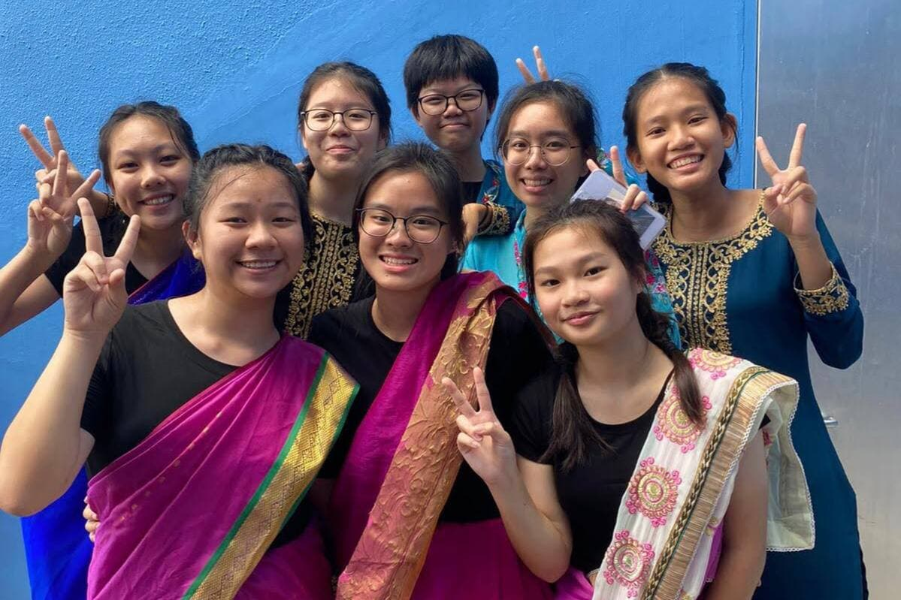

My past school experiences were fruitful and enjoyable,
it was filled with unforgettable memories that cannot be replaced!
During my 10 years in Fairfield, I was given several opportunities to
serve as a leader and to represent my school in many different competitions.
I served as a prefect in my primary school from 2014 - 2015, and served
as a part of the Main Committee from 2015-2016.
2017 was the year where I started my secondary school, I would say that
my time in secondary school was definitely a more exciting one! Like what I said in
my brief introduction, I joined badminton as my CCA! I was once again given
the opportunity to serve as a councillor from 2018-2019,which allowed
me take part in many school based events like the planning of the annual
Secondary One Orientation and Teacher's Day Performance!
I was also able to go for the school planned Trip for International
Experience (TIE) in Beijing! In 2019, I was selected to be the Deputy
Head Councillor for my school which allowed me to hone my leadership skills
further.
In Secondary 3, I was able to choose my desired subject combination in which
I took double science comprising of Physics and Chemistry, double Maths
as well as elective History and pure Geography. And yes! I was part of the batch
that did their O'Level's during COVID-19 :(
The table below are the awards I achieved in my previous schools! The slideshow also shows
some of my favourite memories in school! :)


 
